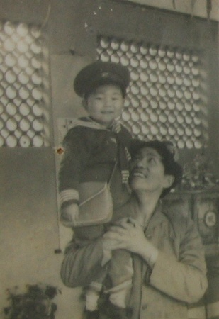

小的时候和许多小朋友一样，很怕爸爸。那是威严的象征。能想起来最早的记忆，是他喜欢用胡子扎我。 每次犯错，都不免要被打屁股。现在提倡不能打孩子，但我现在回想起以前，并没有怀恨的感觉，什么东西，都要适度。那时候的我，常常不能理解我和爸爸会有多少的感情，偏激的时候，还会认为，他只是想我好好学习，以后出名，并没有再管过我别的，把我当作了工具。像记得那时候我经常去我一个女同学家里修自行车，她爸爸是修自行车的。她爸爸老对我说：“我女儿读书不行的，我也只希望她以后能找份安稳的工作，孝顺我就好了。”我在想：为什么我爸爸就没那么宽容，老是对我要求那么高。这样的想法一直持续了很久，生活虽然融洽，我也比较听话，因此看起来和爸爸之间没什么问题。但是我能感觉到，其实是缺了一点什么的…… 上了中学，竞争更是激烈，爸爸和我说话的内容，也绝大部分离不开学习。还好我那时候比较单纯，生活很简单，也很听话，除了有时候踢球晚些，别的时候都是在学校和家里，基本没怎么出去玩。每天放学回家吃完饭就和爸爸一起下下象棋，在阳台看看夕阳，听听收音机，日子很简单……高中了，似乎长大已经到来，很多很多的事，我也许都没准备好去应付…… 我恋爱了，和许多人一样，初恋在心中的地位是多么的高，我花尽了心思去维护这段关系，却从没想过恋爱中许多可能发生的麻烦的事情，又正发生在我身上。我陷入了一段三角关系，那段经历弄得我非常头痛……爸爸似乎看出了什么，经常和我谈这方面的内容，但我硬是一口咬定，我没有谈恋爱！这段日子，我不记得为了这个和爸爸吵了多少次架，我认为他是根本不理解我，蛮不讲理的。我们之间也就没什么话说了…… 一天晚上，我被女朋友气得要死。自己晚自习后去了铁路，我就这样看着火车，很晚，很晚。当我知道要回去的时候，心想：这次死定了。找什么理由好呢？ 正想着，抬头便看见了爸爸，他推着自行车出来找我。我准备好了挨骂，他却什么都没有说了，领着我回家，然后给我端出了准备好的夜宵，叮嘱我不要太晚睡了。那一刻，我真的想哭出来了，我觉得自己愧对他们了，为了根本不值得珍惜的一段感情而与父亲敌对起来，高三了，还有2个月就高考，想到父母这十几年来的辛苦，才发现自己真的错了。 高考分数出来后，我果然大失水准。一家三口安安静静地坐着，开了一盏暗暗的灯，我心里真的很难受。出乎意料，父母没有埋怨我什么。只是一个个的给亲戚打电话，说我这次没有考好，让他们失望了。 最后我还是来了北邮，父亲很高兴地送我过来。中学的时候一直想离开家，做一个自己闯世界的人，觉得这样才是有意思的事情，所以我选了外省，远离家。当一切实现的时候，我已经不是原来的我了。父亲在学校招待所住了几天，学校开学了。只能离开。他和我说不用去送他了。我感到了不舍。可是第2天他又出现在我面前，笑着说想玩一天再走。我才感受到一直威严的他内心的温情。就在他再次离开的那一刻，我真的哭了。看着他的背影，我好像才发现，他已经比我矮了很多，已经不能像从前那样笑我长不大了，他已经胖了很多，已经不能再像以前那样载着我飞快地骑向学校。想起那段时光，我很清楚自己为什么一直喜欢夏天的傍晚在北邮和北师南门的那条路上，静静的看着那些骑车接孩子放学的父母，阳光很温馨地洒在他们的身上，正如小时候的那段记忆。还有陈奕迅的那首《单车》…… 从此家庭在我心里一直看得很重，来到一个新的城市的激动早已经没有，我开始想念远方的父母。十几年，眨眼就过去了……大学的每个假期，我每次回去都会看到父亲自己一个人玩牌，我会想：父亲是否会和我一样怀念两个人一起下棋的日子呢？我叮嘱妈妈，多带爸爸出去散步，做菜不要再放那么多的盐…… 前几天，一位考研失败的同学和我说：昨天我打电话跟我妈说我查了成绩，我说我不行了，我妈说，那就去旅行吧，轻松一点 。我听了马上说不出话了，就觉得很愧疚，之前虽然觉得好难过，可是我都觉得自己可以撑得住，我不哭，但那一刻，我真的彻底崩溃了 …… 我又想起了多年前的那个晚上……如今我已经不害怕爸爸了，他给不了我再多的指导，也不会再打我。他的身型也不再显得威严。我清楚的知道，父亲开始老了，再也不像以前那般铿锵有力的说话，但我越来越明白这么多年的他…… 尽管很久没有再恋爱，但我每当感到寂寞的时候就会给家里打个电话。我知道不管怎么样，世界上还是有两个人深爱着我 
{kind=link}